| Document type | Independent on-chain risk assessment / investigative case study |
| Subject asset | Superfortune (GUA), BNB Smart Chain (BEP-20) |
| Token contract | 0xA5C8e1513B6A08334b479fe4D71F1253259469BE |
| Analysis window | January 2026 – 10 June 2026 |
| Part I (alert phase) | Detection 30 March 2026 · reference price ~$0.42 · snapshots 01 April & 20 May 2026 |
| Part II (post-incident) | 09–10 June 2026 · reference price ~$0.72 |
| Primary data sources | BscScan, Arkham Intelligence, Coinglass, Binance Alpha full-depth feed, PancakeSwap Infinity, DEX analytics |
| Author | Federico Ferrari, Independent On-Chain Investigator / AML Analyst |
| Report ID | GUA-2026-001 |
| Date of issue | 9 July 2026 |
| Status / version | 1.0 |
Disclaimer. This document is independent research and does not constitute financial, legal, or investment advice. Every attribution of multiple addresses to a single controlling entity (referred to as "the operator" or "team-linked entities") is a behavioral inference derived from on-chain patterns, produced under the methodology in §2. Such inferences are not proof of legal identity. The evidentiary status of each finding is stated explicitly throughout, and the analytical constraints are set out in full in §15 (Limitations).
Bottom line. Superfortune (GUA) exhibits a combination of structural characteristics and observed behaviors that, taken together, are consistent with a deliberately engineered, highly manipulable market rather than an organically traded asset. The durable, on-chain-evidenced objective is sustained control of the token's float; the perpetual-settlement dynamic and the anomalous order-book structure are contributing risk factors, each documented with its evidentiary status delimited.
The investigation was conducted in two phases and documents five principal findings:
Extreme supply concentration. The top 10 holders control ~90.3% of supply (Fig. 3). Most of this concentrated supply sits in two populations: a proven team/investor tranche distributed through the project's vesting contract (§7.2), and a set of zero-history operational clusters attributed on behavioral grounds (§2.2). If these two answer to one controlling interest, ~94% of the effective circulating supply (~125M tokens) sits under single control, leaving a genuine open-market float near ~1%, with a further ~5% on CEX wallets (plausibly market-maker inventory). That single-control reading is an assessment, not a proven fact, and no on-chain link ties the two populations together; its basis and evidentiary limits are set out in §7.1. Even without merging them, each withholds its own supply from circulation, so the tradeable float is close to zero on any reading.
A persistent operational playbook. Across both phases the same sequence repeats: synchronized CEX withdrawals (LBank, Gate, MEXC, Binance) to previously unfunded ("zero-history") wallets, dormancy, then coordinated market activity, attributed on behavioral grounds (criteria C1–C5, §2.2; Figs. A–B). Separately, on-chain graph analysis shows that a large block of dormant supply traces to the project's TokenVesting contract via a Gnosis Safe (0x9412…9e9b), that is, team/investor allocation (§7.2, Fig. 4). The two populations are analyzed as distinct groups (§2.2).
Synthetic, venue-concentrated liquidity and an anomalous order book. The only apparently liquid on-chain venue (PancakeSwap Infinity CLMM) holds its active liquidity entirely below the prevailing price; following coordinated buy pressure (30 March – 01 April 2026) the price was pushed out of range, leaving no executable ask-side liquidity on-chain (Figs. 1–2). The token's only apparent depth then sat in the Binance Alpha order book as a remote wall of asks (~$2.62M cumulative in the $1.3–$8.1 band, far above spot; Table 1). A later snapshot (Table 2) shows the large walls withdrawn: cumulative ask-side depth across the band collapsed by ~91% while spot never traded up to them, an observed before/after change in book depth (§6, §13). Whether the placement-and-removal reflects illicit layering or spoofing, or legitimate market-maker repricing, cannot be resolved from the available data and is left explicitly open; only order-level placement and cancellation records would distinguish the two.
Post-"hack" behavior inconsistent with a victim. Following the team's announced security compromise of 28 May 2026 (~2,700 ETH), withdrawals to fresh wallets resumed at the post-incident low, followed on 08 June 2026 by a ~$2M coordinated market buy executed through a 30-wallet cluster (grouped under the analyst-applied private label "gy"; Figs. 9–10). The incident did not interrupt the accumulation pattern; it amplified it.
A perpetual market structurally disproportionate to real liquidity. A Coinglass snapshot records aggregate open interest of ~$46.5M (Fig. 7) against genuine executable spot liquidity of only a few hundred thousand dollars: an OI-to-real-liquidity ratio of roughly two orders of magnitude. Combined with a thin, controllable index (§8, Figs. 5–6), this configuration makes the perpetual settlement price comparatively cheap to influence. (Open interest was also observed to decline materially over the window; precise levels and timestamps were not captured, see §8.2, and no conclusion in this report depends on that trajectory.)
Overall assessment. GUA presents a near-zero genuine float, venue-concentrated synthetic liquidity, a perpetual index drawing from controllable spot books, and a documented, repeating coordination playbook. The structure is consistent with an operator positioned to influence the settlement of a derivatives market that is large relative to real spot liquidity, at low capital cost. The report establishes the manipulability of the structure and the control of the float; it does not assert that any specific settlement-targeting trade was executed. That remains an inference about intent, expressly not claimed as fact. Following the declared exploit, coordinated accumulation resumed at the post-incident low rather than ceasing, a sequence more consistent with a managed operation than with the conduct of a genuine third-party theft victim.
| Field | Value |
|---|---|
| Project name | Superfortune |
| Ticker | GUA (Binance Alpha listing: ALPHA_483) |
| Chain | BNB Smart Chain (BSC) |
| Token contract | 0xA5C8e1513B6A08334b479fe4D71F1253259469BE |
| Total / max supply | 1,000,000,000 |
| Circulating supply (effective) | ~125,000,000 (12.5%), see note |
| Circulating supply (CoinGecko) | 45,000,000, understated |
| Reference price, Part I alert (30 Mar 2026) | ~$0.42 |
| Reference price, Part II (09–10 Jun 2026) | ~$0.72 |
| Market cap (effective, 125M × $0.72) | ~$90M |
| Fully diluted valuation (FDV) | ~$722.7M |
| MCap/FDV (effective) | ~0.125 |
Note on circulating supply. CoinGecko reports 45M, but vesting unlocks already executed bring the effective circulating supply to ~125M. All metrics in this report use the effective figure (125M); the discrepancy with the aggregator is disclosed for transparency. The unlock schedule from the TokenVesting contract (§7.2) has been verified and reconciles with the ~125M figure.
| Segment | Venues |
|---|---|
| Spot (CEX) | MEXC, BYDFi, LBank, Toobit, BitKan, Gate, KCEX, BingX, XT.COM, others |
| Spot (DEX) | PancakeSwap Infinity CLMM (BSC), Uniswap V3 (BSC) |
| Perpetual futures | Binance, Aster, BingX, MEXC, Bitunix, KuCoin, Gate |
On-chain data was collected from BscScan and Arkham Intelligence (transaction graphs, entity clustering, funding-source labeling). Derivatives data (open interest, index composition) was sourced from Coinglass and from the exchanges' own contract specifications. Order-book depth on Binance Alpha was captured from the venue's full-depth feed (ALPHA_483USDT). All exhibits are timestamped; where snapshots from different dates are compared, the dates are stated explicitly. This documentation-first approach follows the evidentiary norms applied by recognized blockchain-intelligence practitioners, under which methodology transparency and source dating are prerequisites for the reliability of any attribution.
Attribution of multiple addresses to a single controlling entity requires the convergence of several independent, objectively verifiable signals. No address was clustered on a single criterion alone. The criteria applied are:
| # | Criterion | Description |
|---|---|---|
| C1 | Common withdrawal source | Funds originate from the same CEX hot wallet(s) (LBank, Gate, MEXC, Binance) within a narrow time window. |
| C2 | Temporal synchronization | Withdrawals and/or market operations executed within seconds of one another (documented to second-level in Figs. A–B). |
| C3 | Size uniformity | Near-identical or regularly scaled transfer amounts (for example the ~$27.8K and ~$26.8K sweep legs in Figs. A–B). |
| C4 | Zero-history / unfunded addresses | Receiving addresses with no prior transaction history on-chain. |
| C5 | Dormancy-then-trigger | Wallets remain inactive between funding and a synchronized activation event. |
| C6 | Direct vesting transfers | Holdings derived from direct transfers traceable to the project's TokenVesting contract via the Gnosis Safe (§7.2). |
Two distinct wallet populations. This report separates the involved wallets into two primary groups, which it does not merge: 1. Team/investor-linked cluster: addresses connected to the team or investors by direct vesting transfers from the TokenVesting contract via the Gnosis Safe (criterion C6; §7.2). 2. Zero-history operational clusters: addresses characterized by synchronized CEX withdrawals to wallets with no prior history (criteria C1–C5). This group encompasses two sub-patterns: wallets that withdrew GUA directly from CEXs, and wallets that withdrew USDT from CEXs to execute on-chain market buys of GUA.
To keep evidence and inference clearly separated, the report uses a fixed three-tier vocabulary, aligned with established analytic-tradecraft standards (ICD 203 / words of estimative probability):
| Tier | Term used | Meaning | Basis |
|---|---|---|---|
| Fact | "observed" | Directly verifiable on-chain or order-book data | Block explorer / full-depth feed / exchange spec |
| Attribution | "attributed" | Clustering conclusion under §2.2 | High confidence where ≥3 criteria converge |
| Judgment | "assessed" | Analytical judgment about intent or coordination | Inferential; remains an estimate, not a fact |
Where a probabilistic qualifier is used ("likely", "more consistent with", "plausibly"), it denotes an estimative judgment, not a demonstrated fact.
This is an intelligence-grade assessment, not a legal determination. It documents structural facts and behavioral patterns to the standard of balance of on-chain evidence; it does not purport to meet any criminal or civil burden of proof, nor to identify natural or legal persons. Findings that rest on inference are labeled "assessed" and are accompanied by the specific data that would be required to upgrade them.
Detection date: 30 March 2026 · Snapshot dates: 01 April 2026 and 20 May 2026 · Reference price at alert: ~$0.42
On 30 March 2026 at 09:06 UTC, monitoring flagged a series of coordinated purchases of GUA. Multiple wallets, attributed to a single entity under the §2.2 methodology, began buying the token in a synchronized fashion.
Sample of involved wallets:
0xaf7fc4b919a0969949e2062ca8721ff4ce955ead
0x21747a7fa92c2d190048629ed5cae40dc2f608ea
0xb1e32bc169edbca755b4e67d9761163612fa1f1e
0xc6818876c4b6b520037ef5b2a6383fb81687746e
0xebdca2f5dbde63f4bdec86168f00ee83e995f324
+ others matching the same behavioral pattern
Observed effect. The buy flow pushed the price out of the active range of the only apparently liquid on-chain pool (PancakeSwap Infinity CLMM). The pool presents a nominally large TVL, but its concentrated-liquidity positions sit entirely below ~$0.40; above that threshold there is no executable liquidity (Figs. 1–2).
Observed operational cycle. Across the cluster the same closed loop is observed end-to-end, consistent with criteria C1–C5:
Exhibit: criteria C2/C3 in practice. The figures below are a representative instance of the recurring sweep cycle, captured 02 May 2026 (not the 30 Mar–01 Apr event itself; the same closed loop repeats throughout the operation). After the wallets complete their swaps and push the LP out of range, the leftover USDT is returned to LBank. The two legs were executed 20 seconds apart by two distinct cluster wallets, for near-identical amounts (~$27.8K and ~$26.8K USDT):
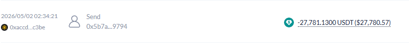
0xaccd…c3be sends −27,781.13 USDT to 0x5b7a…9794 (attributed LBank deposit address; the entity label is not visible in the capture), 02 May 2026 02:34:21 UTC: the residual-USDT leg of the cycle (§3, step 4).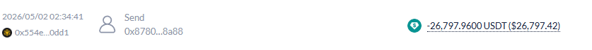
0x554e…0dd1 sends −26,797.96 USDT to 0x8780…8a88 (attributed LBank deposit address; label not visible in the capture), 02 May 2026 02:34:41 UTC, 20 seconds after Fig. A and of near-identical size. Second-level synchronization across distinct wallets satisfies criteria C2/C3.Event timeline:
| Timestamp (UTC) | Event |
|---|---|
| 23 Mar 2026 17:37:04 | Preparatory CEX withdrawals |
| 30 Mar 2026 09:06:10 | Coordinated buying begins |
| 01 Apr 2026 06:45:12 | Buying ends; price out of LP range |
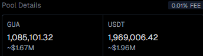
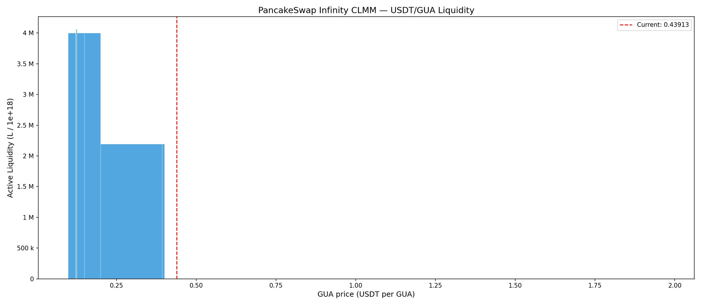
Interpretation (assessed). A pool whose entire depth sits below market price provides exit liquidity to sellers but offers no resistance to upward price movement. Once out of range, the marginal on-chain cost of marking the price higher approaches zero, a precondition for the index dynamics in §8.
Tracing flows backward from the March buys reveals the operation was staged months in advance. Beginning in early January 2026, withdrawals from CEXs were directed to previously unfunded wallets that then simply remained dormant (criteria C1, C4, C5). The first identified withdrawals originate from LBank, with destination addresses showing no prior transaction history.
January 2026 withdrawals to zero-history wallets (representative sample). The receiving addresses had no prior history at funding and remained dormant. This is a sample; the full set (52 addresses) is in Appendix A.1.
| Date/time (UTC) | Source CEX | Destination wallet | Notes |
|---|---|---|---|
| 10 Jan 2026 | LBank | 0x273b34db…ae4f875 |
zero-history wallet |
| 10 Jan 2026 | LBank | 0x79a262de…6a02395 |
zero-history wallet |
| 10 Jan 2026 | LBank | 0xfe61a988…5886073 |
zero-history wallet |
| 10 Jan 2026 | LBank | 0x4daec481…a7b47b4 |
zero-history wallet |
| 10 Jan 2026 | LBank | 0x623ff409…a539196c |
zero-history wallet |
| … | … | (full 52-address list in Appendix A.1) |
Interpretation (assessed). This is consistent with preparatory accumulation and source-of-funds obfuscation: distributing funds across many "clean" addresses months before the operation masks the common origin and defeats naive single-hop attribution. The pattern corresponds to recognized virtual-asset red-flag typologies (structuring; use of newly created addresses; see §17).
Within days of the buy phase ending (01 April 2026), a further wave of CEX withdrawals to zero-history/dormant wallets was observed, this time from LBank and Gate, following the identical structuring pattern: no-history addresses, activated in blocks. The assessed objective is continued draining and repositioning of residual liquidity while maintaining control of the float.
Post-buy withdrawals (early April 2026) to zero-history/dormant wallets (full sample):
| Date/time (UTC) | Source CEX | Destination wallet | Notes |
|---|---|---|---|
| Apr 2026 | LBank / Gate | 0xeec26ede…1e9601f |
zero-history wallet |
| Apr 2026 | LBank / Gate | 0xee0a2d89…5001119 |
zero-history wallet |
| Apr 2026 | LBank / Gate | 0x68dd7697…9ead3d8 |
zero-history wallet |
| Apr 2026 | LBank / Gate | 0x6c30312b…c90d307 |
zero-history wallet |
| Apr 2026 | LBank / Gate | 0x7fdf52f7…1e0babc |
zero-history wallet |
| Apr 2026 | LBank / Gate | 0xb3735546…3131cf9 |
zero-history wallet |
| Apr 2026 | LBank / Gate | 0xb6a23ad1…3dd2195 |
zero-history wallet |
(Full 42-character addresses for this group are listed in Appendix A.2.)
As of 20 May 2026, with GUA trading at ~$0.90, the token's only apparent liquidity was not on-chain (the LP being out of range) but in the Binance Alpha order book, in the form of limit sell orders (asks) stacked far above the prevailing price. The full ask side held ~$2.62M cumulative across the $1.3–$8.1 band, all above spot, concentrated in a few remote blocks rather than adjacent to the market price: most notably a single ~$860K clip at $4.3–$4.4 (≈5× spot) and a ~$577K clip at $2.3–$2.4. This was a remote, top-heavy wall, not tradable support. The complete ask-side depth captured from the venue's full-depth feed is reproduced below.
Table 1: Binance Alpha full-depth ask side, "before" state (20 May 2026; snapshot lastUpdateId 58954977740).
| Price Range ($) | USD Value in Range | Cumulative USD Value |
|---|---|---|
| 1.3 – 1.4 | $12,707.53 | $12,707.53 |
| 1.4 – 1.5 | $104,979.21 | $117,686.74 |
| 1.5 – 1.6 | $192,727.99 | $310,414.73 |
| 1.6 – 1.7 | $58,794.08 | $369,208.82 |
| 1.7 – 1.8 | $9,986.45 | $379,195.26 |
| 1.8 – 1.9 | $149,970.22 | $529,165.48 |
| 1.9 – 2.0 | $68,234.00 | $597,399.48 |
| 2.0 – 2.1 | $20,258.76 | $617,658.24 |
| 2.1 – 2.2 | $57,353.29 | $675,011.54 |
| 2.2 – 2.3 | $39,212.25 | $714,223.79 |
| 2.3 – 2.4 | $577,445.99 | $1,291,669.77 |
| 2.5 – 2.6 | $50,086.76 | $1,341,756.53 |
| 2.6 – 2.7 | $37,222.35 | $1,378,978.88 |
| 2.7 – 2.8 | $32,005.47 | $1,410,984.35 |
| 2.8 – 2.9 | $12,328.80 | $1,423,313.15 |
| 2.9 – 3.0 | $13,269.39 | $1,436,582.54 |
| 3.0 – 3.1 | $43,798.29 | $1,480,380.83 |
| 3.1 – 3.2 | $5,713.45 | $1,486,094.28 |
| 3.2 – 3.3 | $100.86 | $1,486,195.15 |
| 3.3 – 3.4 | $20.00 | $1,486,215.15 |
| 3.4 – 3.5 | $34,306.25 | $1,520,521.39 |
| 3.5 – 3.6 | $12,619.25 | $1,533,140.64 |
| 3.6 – 3.7 | $29,640.61 | $1,562,781.25 |
| 3.7 – 3.8 | $7,961.38 | $1,570,742.64 |
| 3.9 – 4.0 | $19.97 | $1,570,762.60 |
| 4.0 – 4.1 | $27,917.16 | $1,598,679.76 |
| 4.1 – 4.2 | $41,357.07 | $1,640,036.83 |
| 4.2 – 4.3 | $2,287.61 | $1,642,324.44 |
| 4.3 – 4.4 | $860,767.02 | $2,503,091.47 |
| 4.5 – 4.6 | $99.95 | $2,503,191.41 |
| 4.9 – 5.0 | $297.00 | $2,503,488.41 |
| 5.0 – 5.1 | $14,279.25 | $2,517,767.66 |
| 5.7 – 5.8 | $3.64 | $2,517,771.30 |
| 5.9 – 6.0 | $1,537.00 | $2,519,308.30 |
| 6.0 – 6.1 | $89,583.24 | $2,608,891.54 |
| 6.3 – 6.4 | $173.75 | $2,609,065.29 |
| 6.9 – 7.0 | $417.00 | $2,609,482.29 |
| 7.0 – 7.1 | $5,434.31 | $2,614,916.60 |
| 7.5 – 7.6 | $787.50 | $2,615,704.10 |
| 8.0 – 8.1 | $14.16 | $2,615,718.26 |
Values reproduced verbatim from the venue's full-depth feed; the cumulative column is as reported and may differ from an exact running sum by a few cents due to per-level rounding.
Flag for Part II. This ask wall was subsequently withdrawn: a later full-depth snapshot (Table 2, §13) shows cumulative ask-side depth across the band collapsing ~91% (≈$2.62M → ≈$0.24M), with the dominant ~$860K and ~$577K blocks removed, while spot never traded up into the $1–$5 band. The placement-and-removal is a documented fact. What the data cannot establish is intent: whether the orders were illicit layering or spoofing, or legitimate market-maker inventory that was repriced or pulled. That distinction is carried to §13 and left explicitly unresolved.
The supply distribution is extremely concentrated:
Assessed conclusion. The ~94% figure is conditional, not proven. If the vesting-linked team/investor holders and the zero-history operational clusters answer to one controlling interest, then ~94% of the effective circulating supply is under single control, with a further ~5% on CEX wallets (plausibly market-maker inventory) and a residual open-market float near ~1%. The report does not treat the two populations as proven to be the same hand: there is no on-chain funding edge between them (§7.2). The single-control reading rests on a behavioral inference, that independent and unrelated actors would not each acquire large blocks of a token and then leave them dormant in a synchronized accumulation pattern, so the coherent explanation is a single coordinating interest; this is assessed as highly probable but is expressly not demonstrated. The structural takeaway does not depend on resolving that question: whether the holdings answer to one hand or several, each population keeps its supply out of circulation, so the effective free float available to the open market is near zero. The float is, in practice, paralyzed.
Decomposition of the controlled-supply estimate (by evidentiary basis). The two tranches carry different evidentiary weight, and their internal split is left unquantified, since it depends on holder-level state no longer reliably reconstructable:
| Tranche | Share of effective supply | Evidentiary basis |
|---|---|---|
| Vesting-linked dormant holders | (not separately quantified) | Proven: direct TokenVesting → Gnosis Safe transfers (C6; §7.2) |
| Zero-history operational clusters | (not separately quantified) | Behavioral attribution only (C1–C5; §2.2) |
| Combined, if one controlling interest | ~94% | Conditional aggregate: proven tranche + inferred tranche, with common control inferred |
| CEX-held wallets | ~5% | Unverifiable; plausibly market-maker inventory |
| Genuine open-market float | ~1% (residual) | n/a |
On the internal split. The share held by each of the two team-linked tranches (proven-vesting versus behaviorally-clustered) was not fixed at snapshot time, and holder rankings and balances have shifted enough since that a faithful reconstruction from current on-chain state is no longer reliable. What carries the analysis is the aggregate controlled share (~94%) and the corresponding near-zero free float (~1%), which hold regardless of how the ~94% divides between the two tranches. The split is therefore left unquantified rather than estimated.
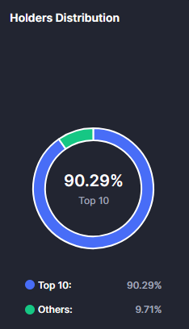
Graph analysis of the holder set shows that a substantial block of supply held by prominent mid-tier holders traces back to the project's TokenVesting contract through a central Gnosis Safe Proxy (0x9412…9e9b). This identifies that tranche of supply as team/investor allocation held in dormant addresses:
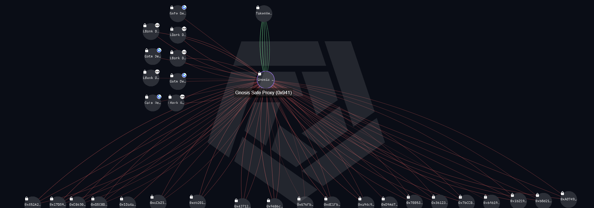
0x9412…9e9b) is fed by the TokenVesting contract (green edges) and fans out (red edges) to a set of dormant holder addresses. The graph establishes that this supply originates from team/investor vesting via the Safe. It does not show a link from the Safe to the operational CEX-withdrawal wallets (LBank/Gate); those are a separate population (§2.2). Capture: 09 Jun 2026.Scope of what this exhibit proves, and what it does not. Fig. 4 demonstrates one specific point: a concentrated tranche of supply is team/investor allocation distributed via the vesting contract and the Gnosis Safe, held in dormant addresses. It does not establish any direct on-chain funding link between the Safe/vesting infrastructure and the operational "zero-history" wallets that execute the CEX-funded buys (§3–§5). Those wallets are funded directly from CEX hot wallets and have no demonstrated on-chain edge to the Safe; their attribution rests on behavioral criteria C1–C5 alone. The two populations are assessed as plausibly one controlling interest, but this report does not claim a proven funding bridge between them.
Significance. The exhibit confirms that a large, identifiable tranche of supply is structurally team/investor-controlled via vesting, which, combined with top-10 concentration and the behaviorally-clustered operational wallets, supports the ~94% controlled-supply estimate (§7.1). It does not by itself upgrade the attribution of the operational wallets, which remains behavioral.
This section explains why an actor would have an incentive to drain spot liquidity and police the order books. The answer lies in the relationship between perpetual open interest and the thinness of the spot venues that determine settlement.
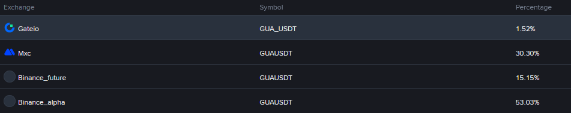
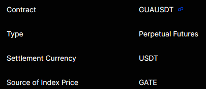
Open interest by exchange (Coinglass snapshot):
| Exchange | Open interest (USD) |
|---|---|
| Binance | ~$29.58M |
| Aster | ~$10.03M |
| BingX | $2.31M |
| MEXC | $1.93M |
| Bitunix | $1.12M |
| KuCoin | $799.19K |
| Gate | $704.17K |
| Total | ~$46.5M (displayed per-exchange values sum to ≈$46.47M) |
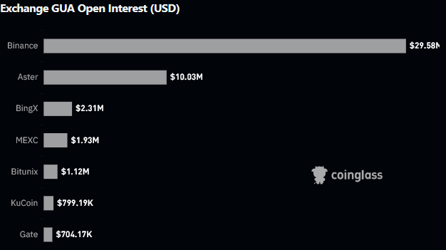
The point rests on the ratio. The figure that matters for the manipulability thesis is the disproportion between aggregate open interest (~$46.5M, observed) and genuine executable spot liquidity (a few hundred thousand dollars): roughly two orders of magnitude. That ratio alone establishes that the derivatives market is large relative to the spot venues that determine its settlement, which is the structural precondition discussed in §8.3.
Monitoring observation: OI declined ahead of the announced incident (not used as evidence). During the analysis period, aggregate OI was observed to fall materially from earlier levels, and the decline appeared concentrated in the run-up to the 28 May 2026 announced compromise rather than spread evenly across the window. The timing is noted for completeness: a run-down in leveraged exposure immediately before an adverse event is worth recording, but it is set down as an observation, not as evidence. Precise levels and timestamps were not captured, because the dated historical OI series requires a paid data service (for example the Coinglass historical API) that was not available; without that series the apparent coincidence in timing cannot be pinned down, and no conclusion in this report, in particular no inference of pre-incident "foreknowledge" or coordinated de-risking, rests on it. Confirming the association would require reconstructing the dated series (§16).
On the basis of the observed snapshot:
In this configuration, an actor controlling supply and spot liquidity could move the price on an index venue with limited capital, shift the perp settlement price, and act against disproportionate OI, while draining residual on-chain LP through the coordinated wallet network.
On its own, this speaks to capability. The mechanism places the operator in a position to influence settlement at low cost; it stops short of showing that any settlement-targeting trade was actually placed. What the on-chain record does establish, and sustains across the window, is control of the float (§14), with the perpetual dynamic sitting alongside it as a contributing structural risk.
Estimated cost of manipulation. A precise figure cannot be reconstructed: the historical order-book depth and index-venue snapshots required to compute the capital needed to move the settlement price by a target percentage are no longer retrievable (no paid historical-data access). Only a very rough order-of-magnitude estimate would be possible, and it is not asserted here. What the evidence does support, without a cost figure, is the qualitative claim: against spot books this thin, the capital required to influence the index is small relative to the ~$46.5M of open interest referencing it.
The Phase 1 evidence establishes a coherent structural picture:
Together these constitute a token of very high structural manipulability: the float is almost entirely controlled, on-chain liquidity offers no upside resistance, and a large derivatives market settles against thin, controllable spot venues. As set out in §8.3, what this establishes is the manipulability of the structure; whether a manipulative act was actually carried out is a separate question the evidence here does not answer.
Update window: 09–10 June 2026 · Reference price: ~$0.72
On 28 May 2026 the team announced a security compromise (a claimed hack).
On-chain actors as declared:
0x70ae678b457c5e1b3fd7ad9537f234dfc1795c15.0x7b8f28ff2e1d4df2d8ddd1dabaff8c3e58fe841c0xfa4cb6add9da4a4b714541b98fd4b2e3da86b7c80x111b78A86C16dBD4261FCb5C7D3A9dAF25E2b589Fund tracing:
0xfA4cB6aD… and 0x7b8f28Ff…; Fig. 8 shows residual balances of ≈$1.63M and ≈$1.49M at the 10 Jun snapshot).CjiUqftwknKFTCz99z5HmxMLQe5z2A2W58CuPamFFJQw) via the Mayan cross-chain protocol, then fragmented across multiple wallets and laundered through FixedFloat.Note on USD equivalents. The dollar figures above and in Fig. 8 are observed at different times: the graph edges carry transfer-time values, while the residual balances are wallet state at the 10 Jun snapshot, with the ETH price moving in between. They therefore do not reconcile to a single ETH price, and the ETH-denominated amounts are the operative figures. In particular, the ~$1.04M shown on the Mayan → Solana edge is the value captured on that edge and is not asserted to represent the full ~900 ETH bridged.
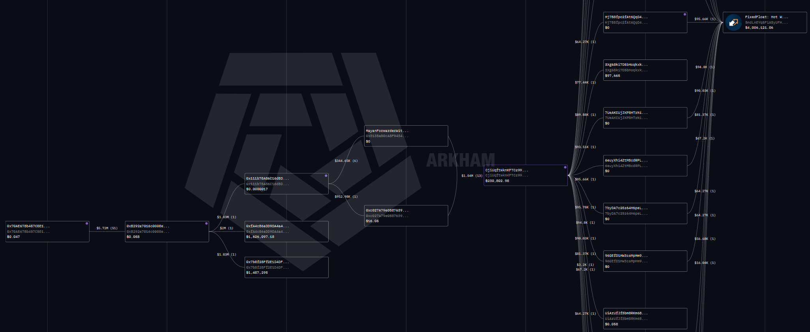
0x70AE678b… sends ~$5.72M over 51 transfers into 0xB292a701…, which splits it to the three declared destinations (0x111b78A8…; 0xfA4cB6aD…, residual ≈$1.63M; 0x7b8f28Ff…, residual ≈$1.49M). Value then moves via a Mayan Forwarder to the Solana consolidation address CjiUqftwknKFTCz99… (~$1.04M across 13 transfers) and fans out (principal legs ~$56K–$96K) into the FixedFloat hot wallet. Snapshot: 10 Jun 2026.Observation (observed). The reported stolen funds were moved cross-chain: bridged via Mayan to Solana, then fragmented and routed through the FixedFloat instant-exchange service. This is recorded as a factual description of the on-chain flow. The report does not infer from this routing whether the incident was a genuine third-party exploit or otherwise, and no evidence here attributes the laundering to the team. The pattern is documented; its authorship is not asserted.
Following the reported hack, suspicious activity intensified. Immediately after the attacker-driven sells, millions of GUA tokens were withdrawn to zero-history wallets, roughly 100K–200K tokens per wallet, within the same time window, matching the Phase 1 clustering pattern.
Critically, the first withdrawals begin exactly at the post-incident low, timing consistent with coordinated accumulation.
Post-incident cluster (sample, ~64 addresses):
0x8647f28c430eda842becf95307dbc9bbfb3978e9
0xcd5efa6e632d998ad47780e696f6ea09cf0427c2
0x9888a6952e16c74333a2c349c8b6e6983f3f10c7
0x99a35db22848583b1f8c6060709e31c32808e861
0x195e6ceb74e6660896662fcf16976961af7c3c20
... [full list in Appendix A.3]
0x73ee8df513556d32f74e29dc1f33371fbb7c2759
0x2ca59c9232f6652e3dce2f67b5a9d578d48da890
On 08 June 2026 at 11:19:17 UTC, a ~30-wallet cluster withdrew approximately $2M in USDT, used to buy GUA at market. The ~30 addresses are grouped under an Arkham private label ("gy") applied by the analyst to visualize the cluster as a single entity; the grouping is the analyst's own clustering under §2.2, not an Arkham-native entity attribution. The cluster is first-funded by 0x5283…9490.
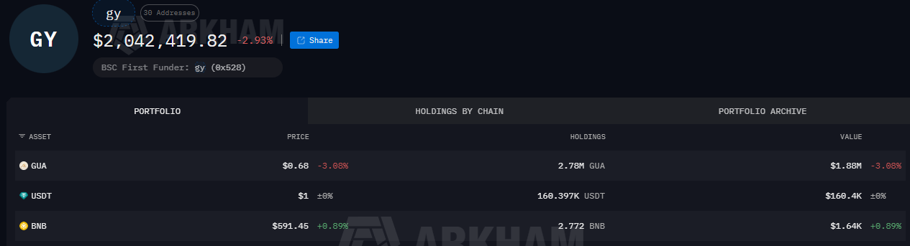
0x5283…9490. Snapshot: 10 Jun 2026.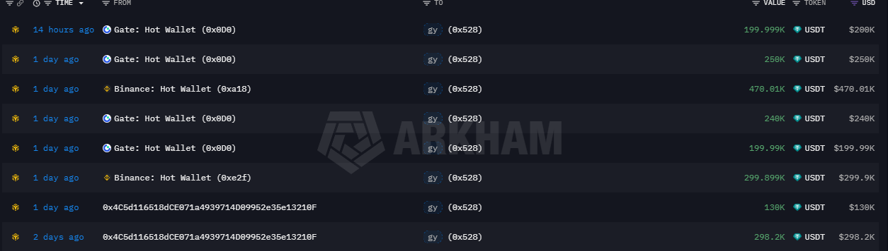
0x5283…9490): repeated transfers from Gate: Hot Wallet (0x0D0…) ($200K, $250K, $240K, $199.99K) and Binance: Hot Wallet ($470.01K, $299.9K), plus $130K / $298.2K from 0x4C5d…210F, over ~2 days. Snapshot: 10 Jun 2026.Cluster wallets (sample, ~30 addresses):
0x1929a5e14472a590cf7cbb3eb940bc115a248ed3
0xcf1df4513ef69b44e982a2b5e541e203d09fa6d2
0x3951c93f6224228a766d21353c6313f1d02e012b
0x7eb98474f2c25348cbf017f077c8c7fe6b0d8b55
0x0cb0fc242cc66b433f0746def0745b52f477557b
...
0x1569700e7ed7c29eef160e63df642a2f6d52db90
0x5283382223d832c423cb81ded4af1b2af0019490
Immediately afterward, further withdrawals from roughly a dozen additional wallets (eight captured below), again from MEXC and LBank:
0x1BC0c474E8ae8d9EFC09A38f0b86Bdc25bF164Ae
0xC9F779B8b97f013F91cB87053B1D426b4508E449
0x79BA1B1FA15Bab9c9a06A7Ebd88980337aB29677
0x03c7892FCe310573f0FEce798E5208e46b2E4c52
0xA93FeA7C5fe9dc43c90C65d295a7a27CD6A4Ea5A
0xade743D933F273E0Cd27995ef54935D980128799
0x7F08faD1536b3dFc257246FfA00D9216890Ff9Be
0x9669BA7d1f8D2Eb15D5e1Ad4fba773B456283Cf6
The schema is identical to Phase 1: coordinated CEX withdrawal → zero-history wallets → market buy, unchanged by the declared compromise that fell between the two phases.
The purpose of the chart capture below is narrow: to mark the timestamps of the post-incident withdrawals against GUA price action, illustrating that coordinated accumulation began at the post-incident low. Other on-screen figures (FDV, displayed market cap, pooled liquidity, Token Sniffer score) are incidental and are not relied upon here.
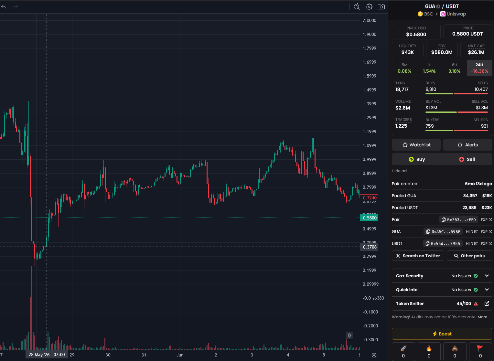
Returning to the ask wall observed on 20 May (§6, Table 1): a later full-depth snapshot shows the large remote walls withdrawn. Cumulative ask-side depth across the band collapsed by ~91%, from ≈$2.62M to ≈$0.24M (Table 2), with the dominant ~$860K block at $4.3–$4.4 reduced to ~$1,757 and the ~$577K block at $2.3–$2.4 removed entirely, while spot never traded up into the $1–$5 band in the interval. The before/after change in book depth is therefore an observed fact: large orders were placed and subsequently withdrawn without filling. (The later snapshot carries a higher Binance order-book lastUpdateId, 60038128782 against 58954977740, confirming it post-dates Table 1.)
Table 2: Binance Alpha full-depth ask side, "after" state (subsequent capture; snapshot lastUpdateId 60038128782).
| Price Level | Volume at Level (USDT) | Cumulative Volume (USDT) |
|---|---|---|
| $1.20 – $1.30 | 14,303.91 | 14,303.91 |
| $1.30 – $1.40 | 36,662.45 | 50,966.36 |
| $1.40 – $1.50 | 14,385.53 | 65,351.88 |
| $1.50 – $1.60 | 15,910.65 | 81,262.53 |
| $1.60 – $1.70 | 17,761.60 | 99,024.13 |
| $1.70 – $1.80 | 181.43 | 99,205.56 |
| $1.80 – $1.90 | 174.46 | 99,380.02 |
| $1.90 – $2.00 | 2,868.22 | 102,248.24 |
| $2.00 – $2.10 | 1,360.42 | 103,608.66 |
| $2.20 – $2.30 | 3,508.30 | 107,116.96 |
| $2.50 – $2.60 | 5,626.10 | 112,743.06 |
| $2.70 – $2.80 | 10.76 | 112,753.82 |
| $3.00 – $3.10 | 12,665.85 | 125,419.66 |
| $3.10 – $3.20 | 20.00 | 125,439.66 |
| $3.20 – $3.30 | 120.86 | 125,560.52 |
| $3.40 – $3.50 | 6.25 | 125,566.77 |
| $3.50 – $3.60 | 31.04 | 125,597.81 |
| $3.60 – $3.70 | 36.00 | 125,633.81 |
| $3.70 – $3.80 | 19.98 | 125,653.79 |
| $3.90 – $4.00 | 19.97 | 125,673.76 |
| $4.00 – $4.10 | 27,937.13 | 153,610.89 |
| $4.10 – $4.20 | 48.21 | 153,659.10 |
| $4.20 – $4.30 | 19.98 | 153,679.07 |
| $4.30 – $4.40 | 1,756.54 | 155,435.61 |
| $4.50 – $4.60 | 99.95 | 155,535.56 |
| $4.90 – $5.00 | 297.00 | 155,832.56 |
| $5.00 – $5.10 | 14,314.60 | 170,147.16 |
| $5.70 – $5.80 | 3.64 | 170,150.79 |
| $5.90 – $6.00 | 1,537.00 | 171,687.79 |
| $6.00 – $6.10 | 64,275.00 | 235,962.79 |
| $6.90 – $7.00 | 417.00 | 236,379.79 |
| $7.00 – $7.10 | 5,434.31 | 241,814.10 |
| $7.50 – $7.60 | 450.00 | 242,264.10 |
| $8.00 – $8.10 | 14.16 | 242,278.26 |
Values reproduced verbatim from the venue's full-depth feed (cumulative column as reported; see note under Table 1).
What is observed:
What is not resolved: intent. Placing large remote orders and later cancelling them unfilled is consistent with two competing explanations the available data cannot distinguish:
Both produce the same on-tape footprint (large remote asks, no fills, bulk removal). Distinguishing them requires order-level data (placement and cancellation timestamps, order IDs, and confirmed absence of partial fills), which is not available from public full-depth snapshots. Accordingly, this report records the withdrawal pattern as observed but makes no finding as to intent. The term "spoofing" is noted only as one candidate explanation, not as a conclusion.
Note. This report draws no link between the ask-wall removal and any coordinated unwind of perpetual exposure. Such a link would depend on a dated OI series (§8.2), which is not available: with no timestamps the temporal coincidence cannot be established, and no foreknowledge inference is drawn here.
The post-incident evidence reinforces, rather than contradicts, the Part I assessment:
Overall (assessed). The post-incident on-chain behavior (accumulation resuming at the exact low, the ~$2M coordinated buy through the analyst-labeled "gy" cluster, and continuous structured withdrawals to zero-history wallets) is difficult to reconcile with the conduct expected of a distressed third-party hack victim, and is more consistent with a continuation of the same coordinated accumulation documented before the incident. The durable, on-chain-evidenced objective is control of the token's float, which persists across the incident. The report does not assert the exploit was staged by the team: the laundering routing is documented, its authorship is not (§10). The conclusion rests on the behavioral on-chain record (clustered withdrawals with matching timestamps and sizes, the $2M coordinated buy, accumulation at the low), not on the vesting-linkage exhibit, nor on the perpetual or order-book observations, whose evidentiary limits are stated in §8.2 and §13.
The findings that remain inferential in this report can be advanced, and in several cases upgraded to demonstrated fact, with data that open-source analysis cannot reach. The steps below are addressed to the parties who hold that data (the exchanges and their compliance functions, and holders of paid historical feeds); each names the specific evidence that would resolve a specific open question.
Obtain order-level order-book data from Binance Alpha (resolves the intent question in §13). The before/after full-depth snapshots (Tables 1 and 2) document a ~91% withdrawal of remote ask-side depth with no fills, but they cannot show intent. The venue's own audit trail, meaning order placement and cancellation timestamps, order IDs, and confirmation that no partial fills occurred, would distinguish illicit layering or spoofing from legitimate market-maker repricing. This is the single dataset that would settle the question left open in §13.
Request account-level (KYC) attribution on the CEX withdrawals (tests the ~94% single-control hypothesis; §7.1). The zero-history clusters are funded by withdrawals to freshly created addresses from LBank, Gate, MEXC and Binance. Exchange records of which account or accounts originated those withdrawals would test directly whether the proven vesting-linked team/investor tranche and the operational fresh-wallet clusters trace to one controlling party, which is the inference on which the conditional ~94% rests. The attributive value sits on the withdrawal side: these are outbound transfers to new addresses, not deposits, so the records that matter are the KYC identities behind the withdrawing accounts.
Reconstruct real executable liquidity venue by venue, then quantify the cost to move the index (completes §8.3). A defensible estimate of the capital needed to move the settlement price by a target percentage, and of that figure against the ~$46.5M of open interest referencing it, requires per-venue spot depth across the index sources and the other listing exchanges. That real order-book liquidity was not retrievable from public snapshots. With it, the manipulation-cost claim moves from qualitative ("small relative to OI") to a quantified figure.
Reconstruct the dated open-interest series (§8.2). The OI decline appeared concentrated in the run-up to the 28 May incident, but the timing cannot be pinned without a dated historical series (a paid feed such as the Coinglass historical API); reconstructing it would either support the pre-incident timing observation or retire it.
Quantify the split between the two clusters (refines §7.1). A holder-level reconciliation at a single fixed snapshot would pin the share held by the proven vesting-linked tranche against the share held by the behaviorally-clustered fresh wallets, replacing the aggregate ~94% with an itemized breakdown. This does not change the near-zero-float conclusion; it sharpens the evidentiary decomposition and the reading of the conditional figure.
Continue tracking the reported-incident funds (extends §10). The ~1,800 ETH held immobile across two addresses, and the ~900 ETH routed via Mayan to Solana and then through FixedFloat, warrant ongoing monitoring. Any movement or consolidation would bear on whether the incident behaves like a genuine third-party theft or a managed transfer.
The observed on-chain behaviors map onto recognized money-laundering and market-integrity red-flag typologies for virtual assets. This mapping is framing for compliance reviewers only; it does not add new factual claims, nor does it assert that any offense occurred.
The typologies fall into two analytically distinct groups, which this report keeps separate. Group A covers the market-manipulation and accumulation conduct that is the subject of this assessment and is attributed, on behavioral grounds (§2.2), to the operator. Group B covers the laundering of the reported-incident (hack) proceeds; those flags describe the movement of funds out of the declared attacker address, whose identity and relationship to the team are unresolved and expressly not attributed to the operator here (§10, §14). Group B is included because the flow is forensically relevant and matches known typologies, not because its authorship is established.
Group A: Market-manipulation / accumulation conduct (attributed to the operator on behavioral grounds; §2.2).
| Observed behavior (this report) | Red-flag typology | Reference |
|---|---|---|
| Funds distributed across many zero-history wallets months ahead, in uniform sizes | Structuring; use of newly created / single-use addresses to obscure source of funds | §4, §5, §11 |
| Synchronized CEX withdrawals and USDT sweeps (second-level) across distinct wallets | Coordinated transaction patterns inconsistent with independent retail activity | §3, §12; Figs. A–B |
| Remote ask wall placed then removed unfilled | Potential order-book manipulation (layering or spoofing); intent unresolved | §6, §13 |
| Perp OI ≫ real spot liquidity on a thin, controllable index | Structural exposure to settlement/index manipulation | §8 |
Group B: Reported-incident fund movement (actor identity unresolved; not attributed to the operator or the team; §10).
| Observed behavior (this report) | Red-flag typology | Reference |
|---|---|---|
| Reported proceeds bridged cross-chain (Mayan → Solana) then fragmented | Chain-hopping / layering to break the trace | §10; Fig. 8 |
| Routing through FixedFloat instant-exchange | Use of services with limited KYC to convert or launder | §10; Fig. 8 |
These typologies follow the FATF Virtual Assets Red Flag Indicators categories (transactions; transaction patterns; anonymity; senders/recipients; source of funds/wealth; geography). Inclusion here is descriptive, not a legal conclusion. The Group A / Group B split is deliberate: the two groups describe conduct by potentially different actors and must not be read as a single attributed profile.
| Term | Definition as used in this report |
|---|---|
| CLMM | Concentrated-liquidity market maker (for example PancakeSwap Infinity or Uniswap V3): liquidity is provided within specific price ranges; outside the active range there is no executable depth. |
| Out of range | A CLMM state in which the market price has moved beyond all provided liquidity, so no on-chain depth exists on one side. |
| Open interest (OI) | Total value of outstanding (unsettled) perpetual-futures contracts. |
| Index price | The reference price a perpetual contract uses for funding and settlement, sourced from one or more spot venues. |
| Zero-history wallet | An address with no prior on-chain transaction history at the moment it is first funded. |
| Spoofing | Entering one or more non-bona-fide orders (typically at the top of book) with intent to cancel before execution (Commodity Exchange Act Section 4c(a)(5)(C), 7 U.S.C. Section 6c(a)(5)(C), as added by Dodd-Frank Act Section 747). |
| Layering | A form of spoofing using multiple non-bona-fide orders at several price tiers to amplify a false impression of supply or demand (FINRA Rule 5210; CFTC under CEA Section 4c(a)(5)(C)). |
| Peeling / fragmentation | Splitting a balance across many addresses or hops to obscure the common origin. |
| Attributed / observed / assessed | Confidence tiers defined in §2.3. |
ALPHA_483USDT); PancakeSwap Infinity; DEX analytics.All addresses below are on BNB Smart Chain. Inclusion reflects the clustering criteria in §2.2; attribution is behavioral (C1–C5) unless otherwise noted. Exact funding timestamps and sizes are held in the analyst's working dataset and can be appended per address on request.
0x273b34db099c71be5b4bfbb577bd0b84bae4f8750x79a262de403f13ae73c100f2fa721a02a6a023950xfe61a98883e99dc66b33d8fb940f98b2158860730x4daec48150ed24b210c44a02487269455a7b47b40x623ff409fd880757b5c48ceed86e66a8a539196c0xde215eb6a421c597658a242a70d2924a07246e2b0x6a4b45abaad9f14b222e72cf6f5249e8618d931d0x4d8c6e4437596649ccb2cf827b393f85191838cf0x725de9c0da808f9fcbb6412d7e2102a0f690c6360xf396addadd91ef6825f3463f62c82e621823d0a50x2ded41c74fa7d93a982a767704184e42055798e00x0057679466e1227ca604ad05e01cd2808d96a9bf0x0b46f2ed9cfde55b6dc0f891a757875e50fb05af0xc986f1e42a46307f9f2cd1d2948062566cb37d4f0x0b79e0c2c6270c407654777c8fb610297707e6c80x8199cc87f4a8458477d7ded4eef5cd1f9a816c810x324e7ea697e054bd6d66e629ac26927c7f56328e0x8cfb33160219c21ebcbbc6c0dbde9064d9382f1d0x91bf57d1c8819b5ef8d2497bf624ff949d2ced620xfed4d1b5d379ed5a4905a7c3e0745124a6f4a44a0x09948ba48c93ea50317d7f86e64f592313fe587b0x5705e436ca94bc09a6ee0aa9b14fa42b0fcdb0320x86a38e7f3c6e6aedbd1f78d32dd3eeb26f7f253e0xb21f8ade5efcbf10c66577212daf9ab81cf2355f0xd40504bc7db248be74f987e76c0ad4ee82ef2e030x1ead54cef6801e3895324c4822abc73fd1a7971e0x4eff8e728a6ca98eaa87a2d6941e7c7058ffd1160x165f6b29fb74afc694b62908392ffcebe86ad0ba0x0ede4fcc7b9ece256e149f74d2234170145f90120x6caa811953619f2258fdc0a66745c777b75919090x07b77f6108c2d832f6fdff1d81af94615ac6ada50x849a8b13488a160c814e38451f02faa4426af06f0xc687e0544aea0095b1c0c8842beecedc38fb1c080x9ce936e26786f9d95e1328454a82f1dc653dbbd00xb4d4ab2ea00b3cfc1ba8f8cc5166aa7e8df55a850x826dfee7384b22373cdf48a1691056becc1649cb0xbb2bc038b3d43e41c86d422319b8d2719dd9899a0x21d365804c5ce40dd9bb45f3a4cfa9918c5e016f0xfd67ff7956072bd89c422cb6bd994e178fad68d50x6481dea1d4b83133725d46d695f855e080a4fcd50xb76a71033d6dcb1d9ecd7c1a9b7d2b70c18292300x5898916e3fc17c7cba6b0fc64014c87f4de0df480xc26f6d8f5b586b604ab2fac16b63fdb211e2ec8b0x7f22304153079f2eea4c55f0d3cf5b8d7cfffbe20x79ab169489e777a6ac19c0a2bf88a1015f2353b80x842ec16561e154861148754e689b371618a721c40x5ec59b94490d804fc0a7e2841b724b11dae10e1c0x896b4b14d3436119a8043b8c7ff6f323b9f09aa50xb8edc84aa0837513e4ed7df92530e34c9d5f01d10x1002293130f7967cd31d231710abbf66458f6e0e0xb20f204a158e4ed0f40fa02b048bbb2ea7ff3cc80x4ff0a588e32b024955618401820873dd697392450xeec26ede0c45c7bbb955f12fdf89ba76e1e9601f0xee0a2d8926a2cf533efb2eccb214ca3fc50011190x68dd7697f19157eb306c9bb9e6dd0993e9ead3d80x6c30312bfb8cc75172fd644433a7f1c8fc90d3070x7fdf52f7cced5b8ba7de453025a75171e1e0babc0xb37355466401c308e945c6b410fbaa4233131cf90xb6a23ad1eca6ea9449ed96ef5b74071b03dd2195The full set of 64 addresses identified in the post-incident cluster (§11) is listed below. Attribution is behavioral (criteria C1–C5, §2.2).
0x8647f28c430eda842becf95307dbc9bbfb3978e90xcd5efa6e632d998ad47780e696f6ea09cf0427c20x9888a6952e16c74333a2c349c8b6e6983f3f10c70x99a35db22848583b1f8c6060709e31c32808e8610x195e6ceb74e6660896662fcf16976961af7c3c200x2cc6cbfcbb65f959e49e6954693fe841492ef7040x9f353c84c3c577f3c6c2f8726228266351c046f50xf4b99d25b2c9c5f1b5e62ab5535b832490612a7d0x29ac4859d8ae89c9497ed64059e2251f8b5223530x142728cfe24743e85cc270d036060d9942fdcc4f0x9fa6c070a990625af2ab811579ba0548803e42cb0x3c94324d090fa516948e8393394b36b9b75944380xb41d33930d18383ce8128712aecc52e0893847bf0x4a063dd13e529ca245575e86882fb3a90e3c7d600x4ce8147cec4b10620311ffe191690ed61784309d0x84433ff819f682f23622c6dc3550c32e70532cc60x3d522ce8c110faa883e58fdc9380325675fec2bc0xd494245365717dc1661f0e6ca2ea68ed5c4cb1680x01edb92a6e46dc37d868394face7d4c9a711db1f0xc0ecc3b86b6bb09fa6d8e31814af7388ac043cef0xb5912e3a4cf8b6460686227c2eab1f51bc955fb10x788370bd04d64709caf1c5892c2e86da2de3bdf30x8923086f199fec4ccddbd93761a8120f06319b990xe3ea485550d34ce155124d2a578cdb89ba9cc2e70xe5cfe51b75f3c6e7f289f23df3a165c2bf2cf3360xfd1349030d820166f89bf3f044e4172d7e7999770x48f14bd3dcf6be6b9744475b52975159adb8bf9d0x1b1f80aaf244021f5054df5573e0de91d83da4970x714ca8966a51f661d62c6fe309dbe922bef5d5df0x8897a34995eead52fa57f8dd8041f80ee37a74870x63d33fb0d6fba89c23586978ae101e783ef8b1600x323e0053d0597e6ce1f21675de0e4569ebc0c70b0xf883fb8c73ee9816238204c6e90aa8ee243e22120xf73625ba86c855da883376265bcb6168e756e2210x229b852213e0d23c86b8aa0632731a6ea56645390x3c5c411e186f07451cf99fa8c876e83f1911e05f0xbfc32c00db82f74fa07c5fe87e76b5e03e34449f0x26bdc6b9fc1f8f4e40f683fbee975104d4df9ffe0xfb607452511c4489af394634039f3fef1f4ea6060x74dfc703ab1d94a18d8b06e03e4d6f418329a9020x9f87dba3bd29f3e4ac5cffc8e628e6fef46ef3800xd0c26575090ba8c8f2087e07689f725f271713760x5f26f44f2fbffaf4749bab13b06dc5594bd5f5190x972f68c48c41b224ca24f6cac035b2d47e39dc8c0xe9e600b8fd589dff2e4c09590b5bf4daebde10300x0da740c806ab3239843487cdb178e74a5e8245e20x8c99191fd46100a01f4b0592e62933245996fefe0xffb76ef626af0fe516fa7b56a8f6b3971e5d7c6b0x8a3c70f6931e61561d14d58abbb92f1e5fbccce10x7dcf021785c292403a97ea714f055824b0eb9ea40x103e0fb4de49f60edf84bfd68f28399b6c1e89880x759fd039bada52ca1a9e312f874cb414a1ed08440xa7e8d0d12a828e4bbd789862861c68bbdc9624990xd83b2337abcebad33c9830f519fe74cb879da2790xd596803021658a85bb04ae23a5f7e2e4ca6967950x7ec48a082917a4b302d0b764bc18577c9c64ca3b0x07313b66d1b7f3f47732145b927670f90d0a552d0xb434f3e8e52e67cb57421ad5c5e196e489a757310xc11f48bbaec90148b0b70a02505548b5b47d48ab0x281add20ac6b72764ee88e634a6160042c95b3ac0x3f1bfc21251ff978322c091543368f76ea392d310x3f94db046e98bdc3a25c18eae3ec8f66434f0f550x73ee8df513556d32f74e29dc1f33371fbb7c27590x2ca59c9232f6652e3dce2f67b5a9d578d48da890A representative sample of the ~30 addresses is listed in §12. The complete cluster is maintained as an Arkham private label and can be viewed in full at https://arkm.com/labels/bb270349-e7f5-44df-985e-d7d070fd256c.
The eight captured addresses of this group are listed in §12.
| Exhibit | Subject | Source | Date |
|---|---|---|---|
| Figs. A–B | Synchronized USDT transfers (clustering evidence) | BscScan | 02 May 2026 |
| Fig. 1 | CLMM pool composition | PancakeSwap Infinity | 20 May 2026 |
| Fig. 2 | CLMM active-liquidity distribution | DEX analytics | 01 Apr 2026 basis (file dated 20 May 2026) |
| Table 1 | Binance Alpha ask-side depth (before) | Binance Alpha full depth (lastUpdateId 58954977740) |
20 May 2026 |
| Table 2 | Binance Alpha ask-side depth (after) | Binance Alpha full depth (lastUpdateId 60038128782) |
subsequent capture |
| Fig. 3 | Holder distribution (Top 10 = 90.29%) | BscScan / analytics | 09 Jun 2026 |
| Fig. 4 | Vesting → Gnosis Safe → dormant holder set | Arkham | 09 Jun 2026 |
| Fig. 5 | Perp index composition by venue | Coinglass | 20 May 2026 |
| Fig. 6 | BingX contract spec (index = GATE) | Exchange spec | 20 May 2026 |
| Fig. 7 | Open interest by exchange | Coinglass | 20 May 2026 |
| Fig. 8 | Attacker → Mayan → Solana → FixedFloat flow | Arkham | 10 Jun 2026 |
| Fig. 9 | Private-label cluster "gy" (30 addresses, ~$2.04M) | Arkham (analyst-applied private label) | 10 Jun 2026 |
| Fig. 10 | Cluster funding inflows (Gate/Binance hot wallets) | Arkham | 10 Jun 2026 |
| Fig. 11 | GUA price chart with withdrawal timestamps | DEX screener | 09–10 Jun 2026 |
End of report.